|
4-4-2
|
Saudi Arabia | 1 | - | 1 | Uruguay |
4-2-3-1
|
| HT 1-0 | ||||||
|
FIFA World CupTuesday 16 June 2026
|
||||||
- Venue
- Miami Stadium
- Attendance
- 62,764
- Referee
- Maurizio Mariani
Goal41'
Abdulelah Al Amri
Yellow card44'
Abdulelah Al Amri
Substitution63'
Musab Al Juwayr
Nasser Al Dawsari
Substitution81'
Mohammed Abu Al Shamat
Nawaf Bu Washl
- 3
Substitution90+3'
Moteb Al Harbi
Abdullah Al Hamddan
Feras Al Brikan
Alaa Al Hejji
Saud Abdulhamid
Ali Lajami
Whistle45+5'
45+5'
- 2
Substitution46'
M. Viña
J. Sanabria
D. Núñez
A. Canobbio
Substitution72'
M. Ugarte
N. de la Cruz
Goal80'
M. Araújo
Substitution81'
M. Araújo
B. Rodríguez
Substitution90'
F. Viñas
R. Aguirre
Saudi Arabia | |
|---|---|
Goalkeeper | |
| 21 | Mohammed Al Owais |
Defender | |
| 4 | Abdulelah Al Amri 41'44' |
| 5 | Hassan Al Tambakti |
| 12 | Saud Abdulhamid 90+3' |
| 24 | Moteb Al Harbi 90+3' |
Midfielder | |
| 10 | Salem Al Dawsari |
| 15 | Abdullah Al Khaibari |
| 23 | Mohamed Kanno |
| 26 | Mohammed Abu Al Shamat 81' |
Forward | |
| 7 | Musab Al Juwayr 63' |
| 9 | Feras Al Brikan 90+3' |
Substitutes | |
| 3 | Ali Lajami 90+3' |
| 6 | Nasser Al Dawsari 63' |
| 13 | Nawaf Bu Washl 81' |
| 18 | Alaa Al Hejji 90+3' |
| 19 | Abdullah Al Hamddan 90+3' |
Uruguay | |
Goalkeeper | |
| 23 | F. Muslera |
Defender | |
| 3 | S. Cáceres |
| 13 | G. Varela |
| 16 | M. Olivera |
| 17 | M. Viña 46' |
Midfielder | |
| 5 | M. Ugarte 72' |
| 6 | R. Bentancur |
| 8 | F. Valverde |
| 20 | M. Araújo 80'81' |
| 21 | F. Viñas 90' |
Forward | |
| 9 | D. Núñez 46' |
Substitutes | |
| 7 | N. de la Cruz 72' |
| 14 | A. Canobbio 46' |
| 18 | B. Rodríguez 81' |
| 19 | R. Aguirre 90' |
| 25 | J. Sanabria 46' |


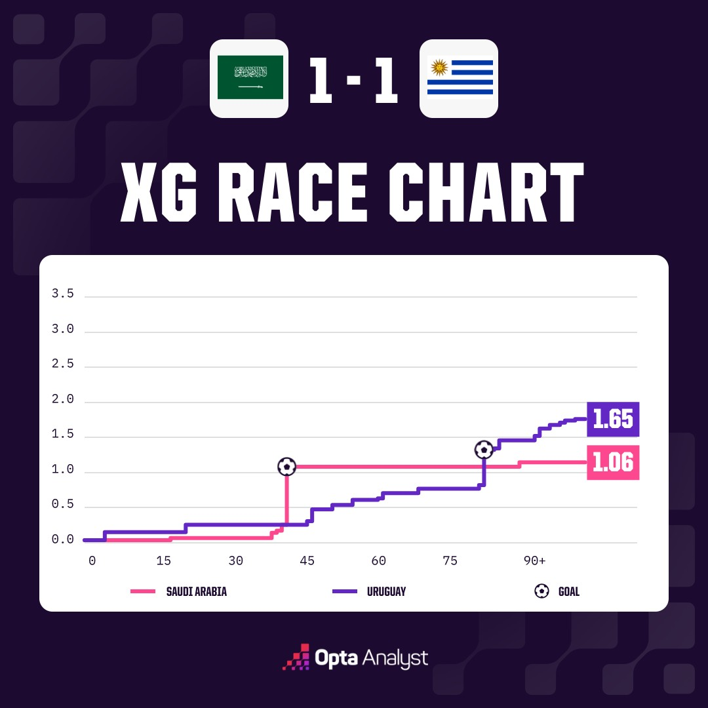
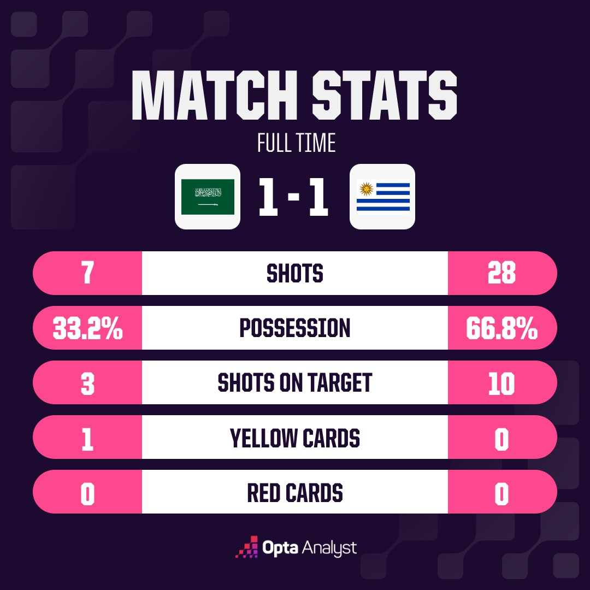
100'
Saudi Arabia have failed to win in their last 3 games in the FIFA World Cup, their last longer winless streak was from 3rd July 1994 to 20th June 2018, a run of 12 games.
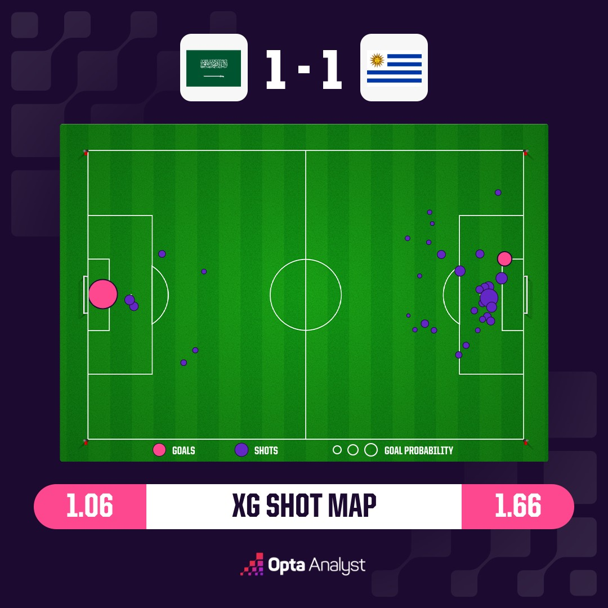
90+9'
That's it! The referee blows the whistle and we have reached full-time. The final score at Miami Stadium is Saudi Arabia 1-1 Uruguay.
90+8'
BLOCKED! That was close. Juan Sanabria got off a shot, which was heading in, but Ali Lajami was on hand to make a vital intervention. Great block!
90+8'
Corner! The ball goes behind and now Uruguay will aim to deliver a good ball into the penalty area and test that Saudi Arabia defence, which has been frustrating them in recent minutes.
90+7'
Can Saudi Arabia survive here? They will have some defending to do after the ball is turned behind for a corner kick. Will Uruguay take this opportunity and grab the goal they have been pushing for?
90+7'
The deadlock could be about to break. Uruguay with a flurry of set-pieces in dangerous territory.
90+6'
Mohammed Al Owais has made 9 saves, his highest total in a single match in the FIFA World Cup.
90+6'
CORNER! The pressure is building for Uruguay as they win a set-piece after Brian Rodríguez's attempt is blocked by Mohammed Al Owais and diverted out of play.
90+6'
MISS! The score remains 1-1, with Saudi Arabia relieved after Uruguay’s Guillermo Varela goes for goal but sends their attempt off target. Not one to write home about, that one.
90+5'
Uruguay win a corner after Federico Valverde sees a shot diverted wide by Abdullah Al Khaibari. Can Uruguay make this opportunity count, or will Saudi Arabia defend this?
90+5'
In the last 15 minutes, it is Uruguay who have dominated the ball, having seen 66.42% of the possession, yet they have not been able to go and turn that into a goal just yet, with their opponents standing firm.
90+3'
A chance goes begging as Sebastián Cáceres gets off a shot that does not hit the target. They might have done better with that one, but instead it is a goal-kick to Saudi Arabia.
90+3'
Uruguay win a corner after Federico Valverde sees a shot diverted wide by Mohammed Al Owais. Can Uruguay make this opportunity count, or will Saudi Arabia defend this?
90+3'
The Saudi Arabia manager is looking to the substitutes’ bench, bringing on Ali Lajami in place of Saud Abdulhamid. Will the change make a difference? Let’s find out!
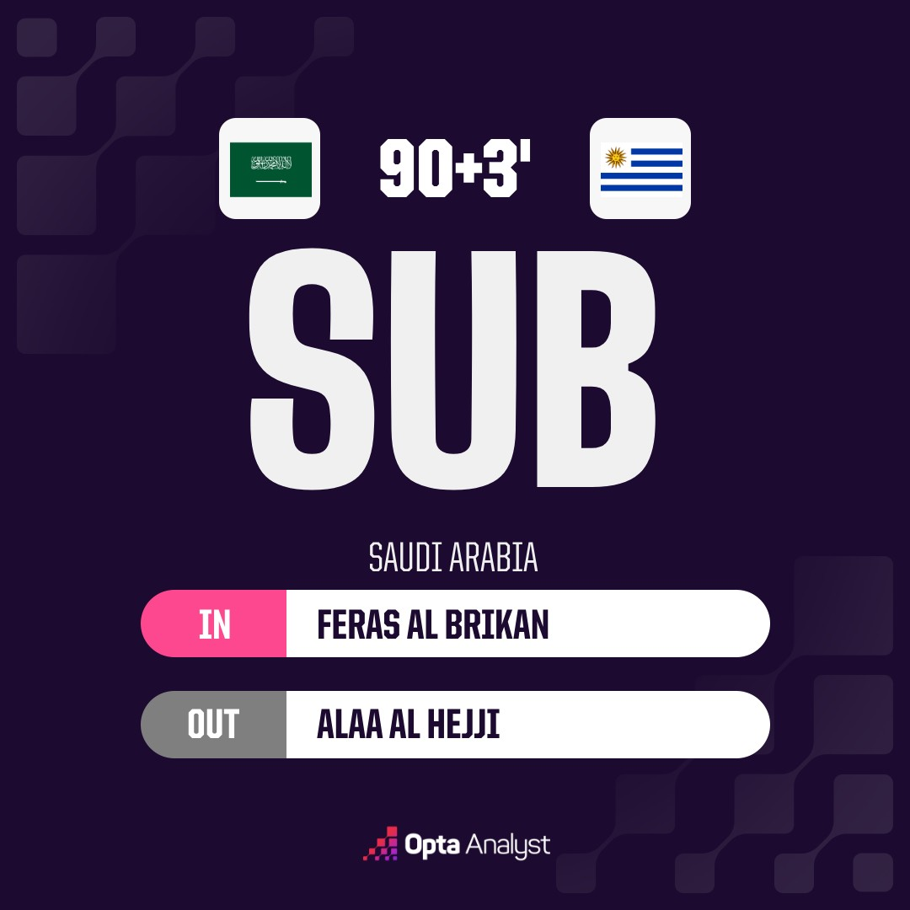
90+3'
Feras Al Brikan’s match is over as Saudi Arabia decide to make a substitution. Alaa Al Hejji enters the field in what looks like a tactical change.
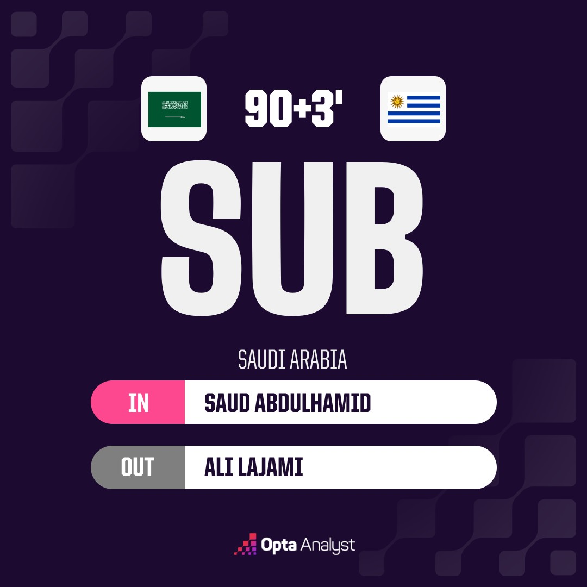
90+3'
The Saudi Arabia manager is looking to the substitutes’ bench, bringing on Abdullah Al Hamddan in place of Moteb Al Harbi. Will the change make a difference? Let’s find out!
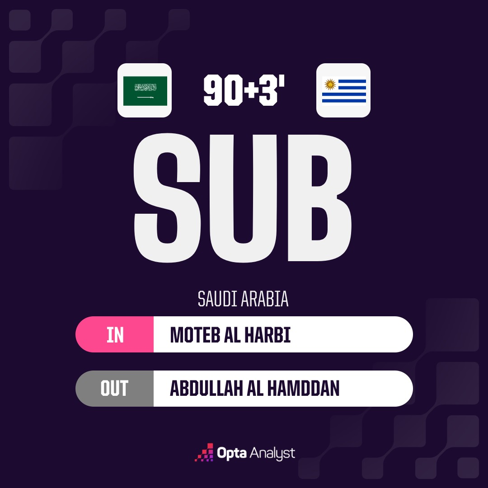
90+2'
Can Saudi Arabia survive here? They will have some defending to do after the ball is turned behind for a corner kick. Will Uruguay take this opportunity and grab the goal they have been pushing for?
90+1'
SAVED! Good work from Mohammed Al Owais, who stands firm to deny Nicolás de la Cruz, who managed to get a shot away from inside the Saudi Arabia area.
90+1'
A foul from Nawaf Bu Washl on Brian Rodríguez sees Uruguay win a free-kick, but it is not in a dangerous position, so Saudi Arabia should be confident they can defend it easily enough.
90+1'
A substitution for Uruguay sees Federico Viñas replaced by Rodrigo Aguirre. There does not appear to be any obvious sign of an injury, so that is a tactical switch.
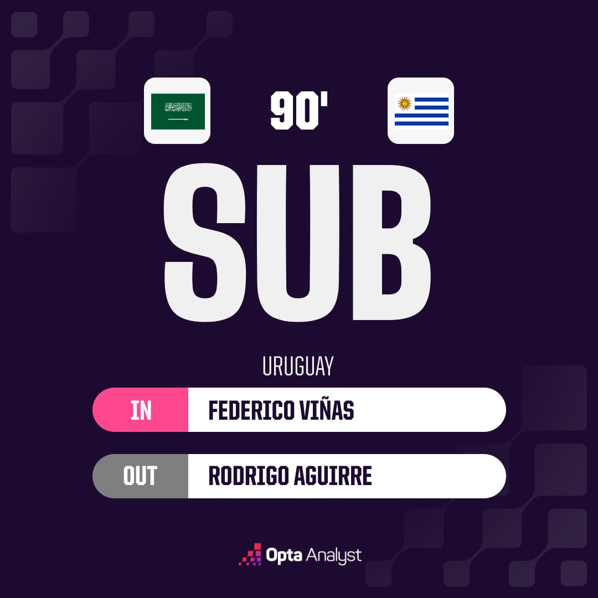
89'
A chance now for Uruguay to get a good delivery into the box, after the ball is diverted behind for a corner. Uruguay have been pushing for what would be a key goal, but Saudi Arabia have stood firm so far.
88'
Saudi Arabia offside trap works a treat as they step up and catch Juan Sanabria offside. Uruguay are searching for a goal, but their players will need to play smarter to keep themselves on the right side of the line.
87'
MISS! A shot from Saud Abdulhamid ends up being off target. They might have done a bit better with that one, but it remains Saudi Arabia 1-1 Uruguay.
87'
Shot blocked! Mohamed Kanno unleashes an attempt at goal, but the ball does not reach its target thanks to Mathías Olivera, who makes a solid block to stem the danger – for now.
85'
A free-kick to Uruguay, as Nasser Al Dawsari goes in and fouls Rodrigo Bentancur. However, Saudi Arabia will not mind giving one away in this area too much, with plenty of distance to their goal.
83'
MISS! A shot from Brian Rodríguez ends up being off target. They might have done a bit better with that one, but it remains Uruguay 1-1 Saudi Arabia.
83'
MISS! The score remains 1-1, with Saudi Arabia relieved after Uruguay’s Sebastián Cáceres goes for goal but sends their attempt off target. Not one to write home about, that one.
82'
Corner now for Uruguay, as they see a shot from Juan Sanabria deflected out of play for a set-piece. Saudi Arabia have some defending to do, here. Could this result in a big opportunity?
81'
Substitution! Nawaf Bu Washl replaces Mohammed Abu Al Shamat for Saudi Arabia as the manager shuffles the pack. Can Nawaf Bu Washl make an impression as this match continues?
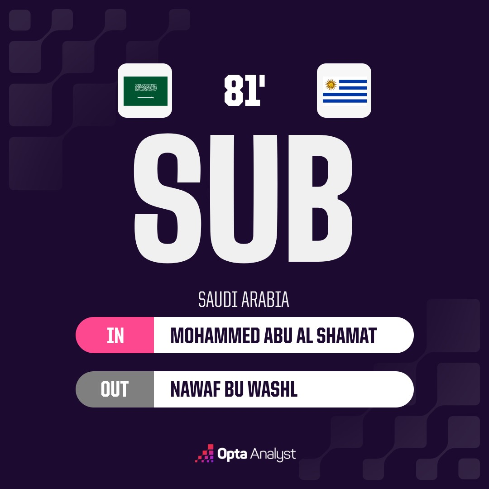
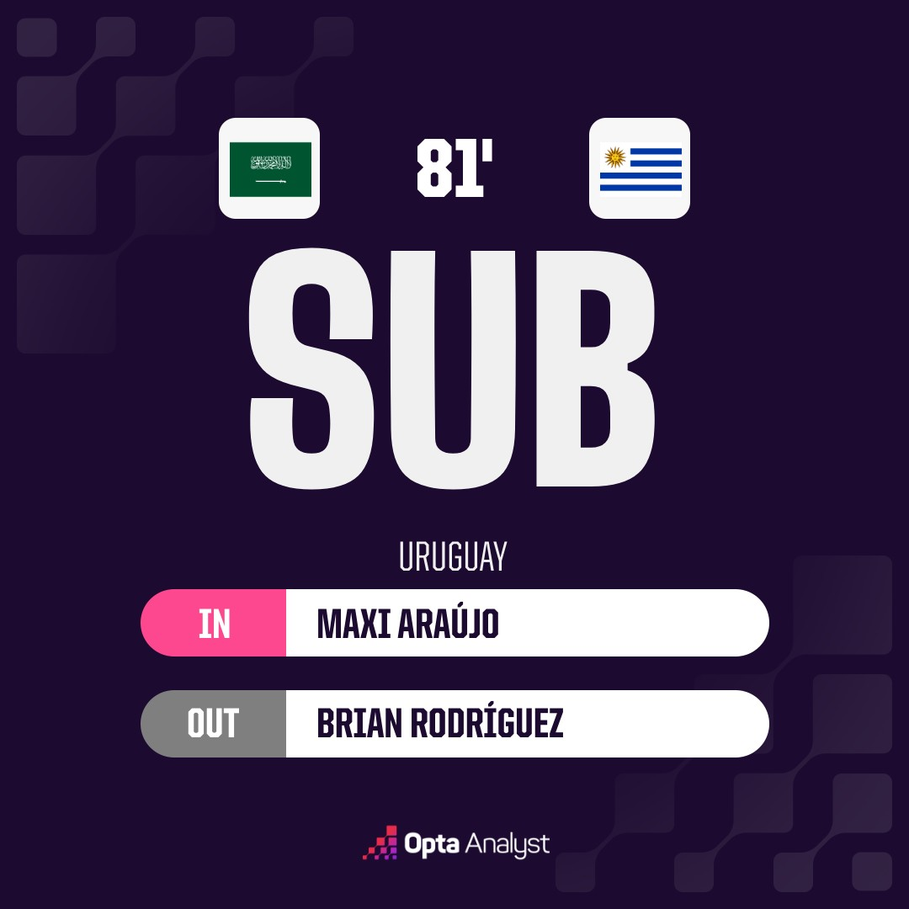
81'
A substitution for Uruguay sees Maxi Araújo replaced by Brian Rodríguez. There does not appear to be any obvious sign of an injury, so that is a tactical switch.
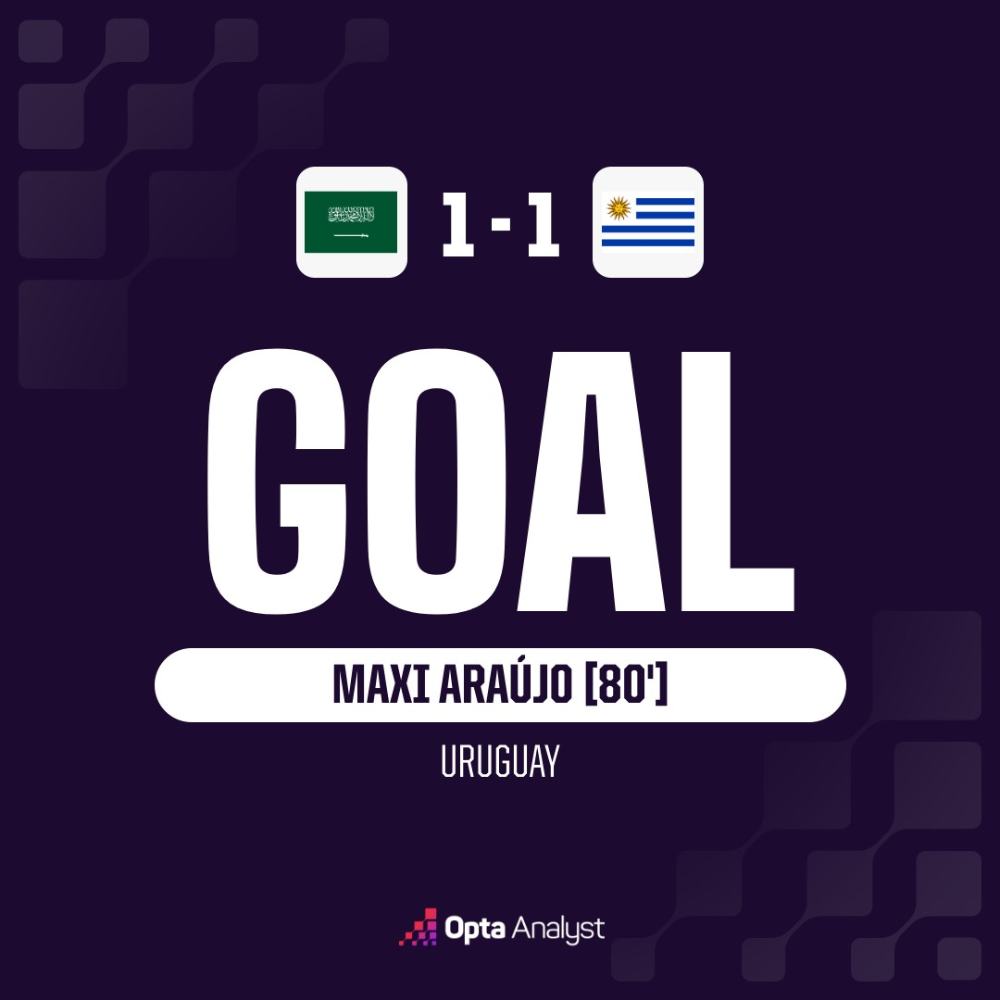
80'
GOAL! Maxi Araújo scores from inside the penalty area and it’s all level between Uruguay and Saudi Arabia. All to play for now, can either side go on and find a winner?
80'
MISS! How has that not gone in? A complete lack of composure shown from Federico Viñas, who squanders a golden chance for Uruguay, whose coach looks on frustrated from the touchline. A real let off for Saudi Arabia!
79'
BLOCK! An intervention from Nasser Al Dawsari might have just prevented a goal, with the defending player getting in the way of an attempt from Nicolás de la Cruz. Solid defending there!
77'
It’s backs to the wall now — Saudi Arabia throwing everything into defending their advantage, with a flurry of crucial interventions.
77'
This game is certainly in a bit of a lull now, with neither team having had an attempt at goal in the past 10 minutes. It could do with something to spark it into life. Uruguay have had more possession during the quiet spell, but are yet to do much with it.
76'
A rash challenge from Mohammed Abu Al Shamat, who sends Nicolás de la Cruz tumbling, giving Uruguay a free-kick. It is not in a threatening position, but it gives them a chance to get back on the ball.
76'
Uruguay have had more of the ball with 75 minutes played, with 64.86% possession compared to Saudi Arabia’s 35.14%. That is not likely to change too much in the final 15 minutes.
74'
A rash challenge from Sebastián Cáceres, who sends Feras Al Brikan tumbling, giving Saudi Arabia a free-kick. It is not in a threatening position, but it gives them a chance to get back on the ball.
73'
Corner! Uruguay are pushing for a goal and now they have an opportunity from this set-piece.
73'
Set-piece after set-piece - Uruguay are turning up the pressure as they search for a breakthrough.
72'
A foul from Nasser Al Dawsari on Agustín Canobbio sees Uruguay win a free-kick, but it is not in a dangerous position, so Saudi Arabia should be confident they can defend it easily enough.
72'
The Uruguay manager is looking to the substitutes’ bench, bringing on Nicolás de la Cruz in place of Manuel Ugarte. Will the change make a difference? Let’s find out!
72'
It has been 30 minutes since Saudi Arabia last attempted a shot in this game.
72'
There is plenty of possession for Uruguay, with 76.24% compared to Saudi Arabia 23.76 % in the last 15 minutes. However, Uruguay have not been able to turn that dominance of the ball into a goal.
68'
Nasser Al Dawsari goes in on Rodrigo Bentancur and concedes a foul. The free-kick is not in a particularly dangerous area from Saudi Arabia’s viewpoint, though.
67'
That might have been going in! A fantastic block from Nasser Al Dawsari, who gets in the way of a goal-bound effort from Guillermo Varela. Would the goalkeeper have been beaten? We will never know.
67'
Mohammed Al Owais has made 5 saves, the first time he has made at least 5 saves in a match in the FIFA World Cup since facing Mexico on 30th November 2022 (8 saves).
67'
Federico Valverde goes for goal with a strike from distance, but Mohammed Al Owais is able to watch it all the way and make the save. A bit of a tester, there.
67'
Uruguay have attempted the last 10 shots in this game, Saudi Arabia last shot was taken by Abdulelah Al Amri in the 41st minute.
66'
Foul! A free-kick now in a dangerous area for Uruguay, after Maxi Araújo is fouled by Mohammed Abu Al Shamat. Can Uruguay make the most of this opportunity?
66'
With 25 minutes left to play, it’s a good chance to check in on the shot count. Saudi Arabia have mustered 5 so far, with 3 of those landing on target. On the other hand, Uruguay have gotten 12 of their 4 of attempts on target.
63'
Substitution! Nasser Al Dawsari replaces Musab Al Juwayr for Saudi Arabia as the manager shuffles the pack. Can Nasser Al Dawsari make an impression as this match continues?
60'
That is a disappointing effort from Juan Sanabria, who went for glory but got their attempt wrong, and the shot sailed off target. A frustrating moment for Uruguay.
60'
Against the post! The woodwork comes to Saudi Arabia salvation as Manuel Ugarte sees an effort clatter the upright. Will Saudi Arabia make that good fortune count, or can Uruguay put that bad luck behind them and grab a goal?
60'
That was hopeful! A bit of a punt from Manuel Ugarte, who goes for goal from distance, but Mohammed Al Owais makes the save.
59'
A chance goes begging as Agustín Canobbio gets off a shot that does not hit the target. They might have done better with that one, but instead it is a goal-kick to Saudi Arabia.
56'
Plenty of the ball in the last quarter-of-an-hour of this match for Uruguay, but still Saudi Arabia stand firm, despite having had only 25.40% of the ball in that period. Can Uruguay make their possessional dominance count?
55'
Great defending from Saudi Arabia, who are staying organised and winning key battles to preserve their lead.
54'
No luck! Manuel Ugarte takes on a shot that, had they got it right, might have been set to test the goalkeeper, but instead it is sent off target and Saudi Arabia come away unscathed.
54'
That might have been going in! A fantastic block from Feras Al Brikan, who gets in the way of a goal-bound effort from Mathías Olivera. Would the goalkeeper have been beaten? We will never know.
53'
Corner! The ball goes behind and now Uruguay will aim to deliver a good ball into the penalty area and test that Saudi Arabia defence, which has been frustrating them in recent minutes.
52'
No luck – it’s offside! Federico Viñas looked to dart in behind and get on the end of a pass, yet they just went too early, and the flag is up to signal offside.
50'
A chance goes begging as Federico Viñas gets off a shot that does not hit the target. They might have done better with that one, but instead it is a goal-kick to Saudi Arabia.
50'
A chance now for Uruguay to get a good delivery into the box, after the ball is diverted behind for a corner. Uruguay have been pushing for what would be a key goal, but Saudi Arabia have stood firm so far.
47'
Maxi Araújo makes a run in behind but the Saudi Arabia defensive line were alert, and stepped up in time to catch them offside. That run just needed to be timed better.
46'
SAVED! Good work from Mohammed Al Owais, who stands firm to deny Federico Viñas, who managed to get a shot away from inside the Saudi Arabia area.
46'
Substitution! Juan Sanabria replaces Matías Viña for Uruguay as the manager shuffles the pack. Can Juan Sanabria make an impression as this match continues?
46'
Darwin Núñez’s match is over as Uruguay decide to make a substitution. Agustín Canobbio enters the field in what looks like a tactical change.
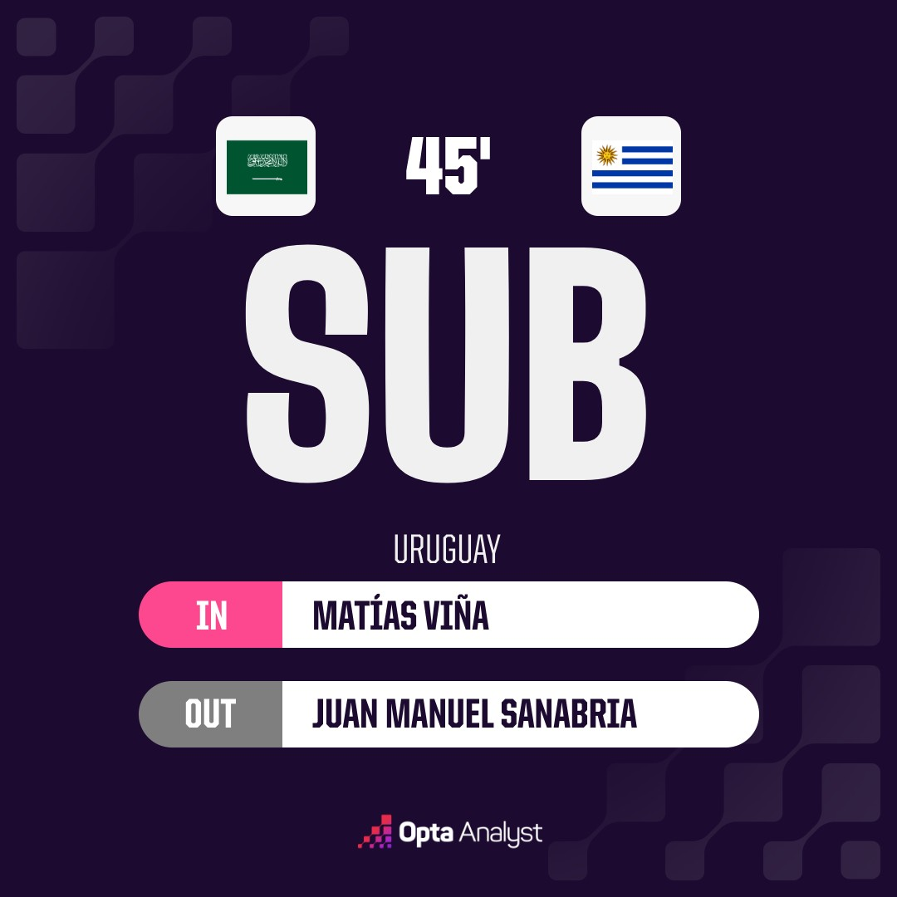
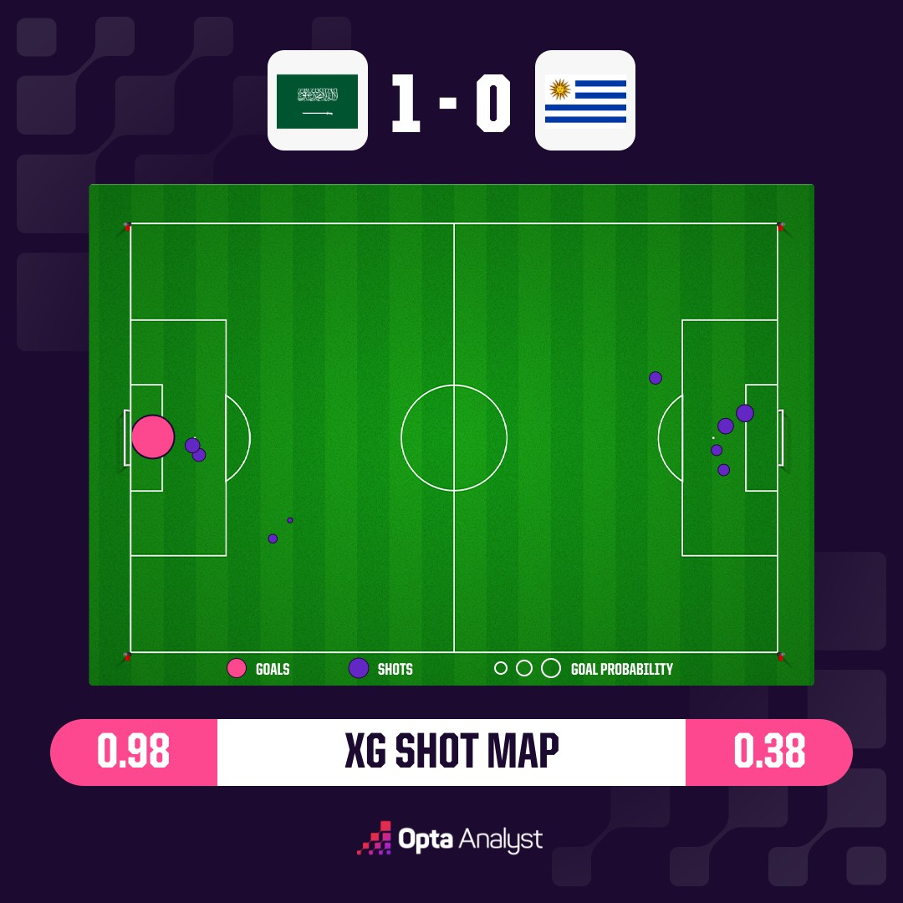
45+5'
The first half comes to a close and it’s Saudi Arabia who have the lead over Uruguay at Miami Stadium, with the scoreline 1-0 at the interval. Will Uruguay turn this around after the break?
45+4'
That’s offside! A switched-on defensive line from Saudi Arabia, as they step up at the right time to catch Matías Viña offside, and the assistant referee’s flag is up.
45+1'
The Saudi Arabia defence steps up in time and there is a frustration for Maxi Araújo, who thought they were through until the flag goes up to signal offside.
45+1'
No luck! Darwin Núñez takes on a shot that, had they got it right, might have been set to test the goalkeeper, but instead it is sent off target and Saudi Arabia come away unscathed.
45+1'
Can Saudi Arabia survive here? They will have some defending to do after the ball is turned behind for a corner kick. Will Uruguay take this opportunity and grab the goal they have been pushing for?
45+1'
SAVED! Good work from Mohammed Al Owais, who stands firm to deny Federico Viñas, who managed to get a shot away from inside the Saudi Arabia area.
44'
The referee goes to their pocket and pulls out a yellow card, which is brandished in the direction of Abdulelah Al Amri. Will they be able to avoid a second booking?
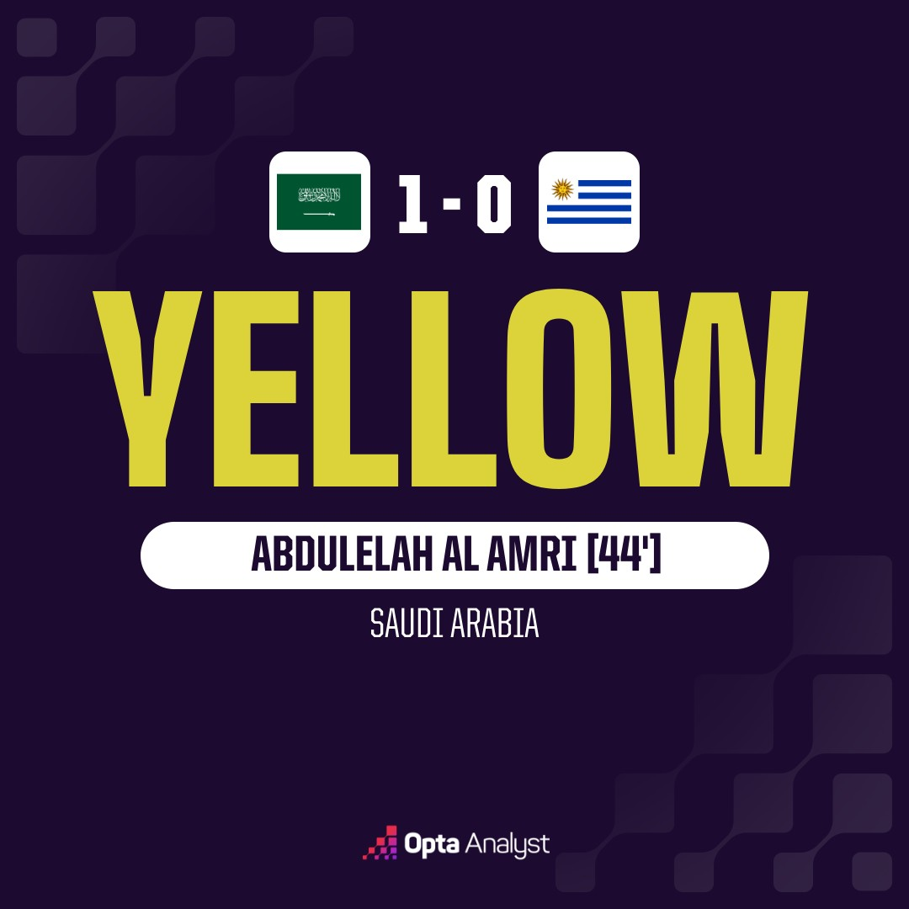
44'
This could be a chance for Uruguay, after Abdulelah Al Amri fouls Maxi Araújo, handing them a free-kick in a threatening area. A good set-piece from here could really test the Saudi Arabia defense!
41'
GOAL! The drama continues as Saudi Arabia take the lead, courtesy of a goal from Abdulelah Al Amri. There is still plenty of time remaining for more potential twists and turns, but as things stand Saudi Arabia are on track for victory.
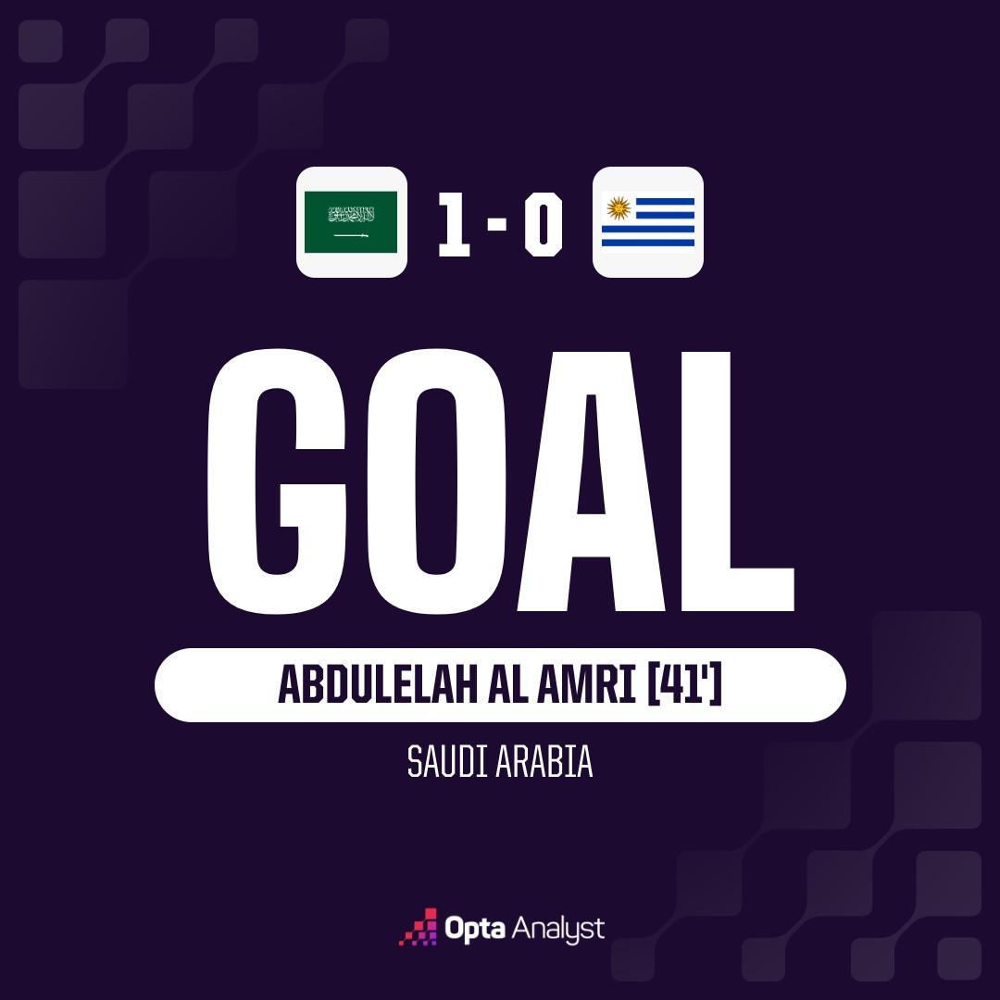
40'
SHOT! Mohamed Kanno manages to get a shot off from inside the area, but although it was heading in, they cannot get enough on it to beat Fernando Muslera, who makes the save.
40'
Corner! Saudi Arabia are pushing for a goal and now they have an opportunity from this set-piece.
39'
That is a disappointing effort from Abdullah Al Khaibari, who went for glory but got their attempt wrong, and the shot sailed off target. A frustrating moment for Saudi Arabia.
38'
This feels like a spell that could matter - Saudi Arabia earning repeated chances to swing it in from wide areas.
38'
Saudi Arabia win a corner after Abdulelah Al Amri sees a shot diverted wide by Fernando Muslera. Can Saudi Arabia make this opportunity count, or will Uruguay defend this?
36'
Can Saudi Arabia make this chance count? They have won a free-kick in a threatening position after a foul from Rodrigo Bentancur on Moteb Al Harbi. Will Uruguay's defence be tested here?
36'
In the last 15 minutes, it is Uruguay who have dominated the ball, having seen 71.20% of the possession, yet they have not been able to go and turn that into a single shot, so there is no imminent sign of a goal.
34'
A rash challenge from Darwin Núñez, who sends Mohammed Al Owais tumbling, giving Saudi Arabia a free-kick. It is not in a threatening position, but it gives them a chance to get back on the ball.
31'
Federico Valverde goes in on Moteb Al Harbi and concedes a foul. The free-kick is not in a particularly dangerous area from Uruguay’s viewpoint, though.
31'
Free-kick! A foul from Saud Abdulhamid on Maxi Araújo. It is well away from Saudi Arabia’s goal, so it is unlikely to result in a chance for Uruguay.
31'
Neither team has had a shot in the past 10 minutes, as this match just enters something of a down period. Uruguay have seen more of the ball, with 74 per cent possession, but Saudi Arabia are keeping them away from goal. There is still a chance the match will spark into life, though.
30'
A foul from Maxi Araújo on Saud Abdulhamid sees Saudi Arabia win a free-kick, but it is not in a dangerous position, so Uruguay should be confident they can defend it easily enough.
29'
In the last 15 minutes, it is Uruguay who have dominated the ball, having seen 65.04% of the possession, yet they have not been able to go and turn that into a goal just yet, with their opponents standing firm.
28'
A free-kick to Uruguay, as Musab Al Juwayr goes in and fouls Sebastián Cáceres. However, Saudi Arabia will not mind giving one away in this area too much, with plenty of distance to their goal.
23'
Offside! Federico Viñas thought they were through on goal, but the Saudi Arabia defence stepped up in time to catch them offside, and the assistant referee puts their flag up.
22'
Can Uruguay survive here? They will have some defending to do after the ball is turned behind for a corner kick. Will Saudi Arabia take this opportunity and grab the goal they have been pushing for?
21'
No luck! Rodrigo Bentancur takes on a shot that, had they got it right, might have been set to test the goalkeeper, but instead it is sent off target and Saudi Arabia come away unscathed.
20'
This could be a chance for Uruguay, after Saud Abdulhamid fouls Matías Viña, handing them a free-kick in a threatening area. A good set-piece from here could really test the Saudi Arabia defense!
19'
A free-kick to Uruguay, as Salem Al Dawsari goes in and fouls Sebastián Cáceres. However, Saudi Arabia will not mind giving one away in this area too much, with plenty of distance to their goal.
18'
MISS! A shot from Salem Al Dawsari ends up being off target. They might have done a bit better with that one, but it remains Saudi Arabia 0-0 Uruguay.
16'
Not much goalmouth action to speak of in this period of the game, with no attempts made from either side. This game could spark at any moment, however. It is Saudi Arabia who have had more of the ball, controlling 63 per cent possession in the last 10 minutes.
15'
Early signs of a midfield battle - both teams sizing each other up.
13'
Confident start by Saudi Arabia, knocking it around with purpose and keeping control in the opening phase.
7'
A free-kick to Saudi Arabia, as Guillermo Varela goes in and fouls Moteb Al Harbi. However, Uruguay will not mind giving one away in this area too much, with plenty of distance to their goal.
6'
It’s been tight so far, and Saudi Arabia are making sure it stays that way with strong defensive discipline and well-timed clearances.
5'
Corner! Uruguay are pushing for a goal and now they have an opportunity from this set-piece.
5'
Save! A long-range strike from Maxi Araújo was heading in, but Mohammed Al Owais got to it to parry it away from danger.
1'
And we are off! Strap in, folks, for this mouthwatering encounter between Saudi Arabia and Uruguay at Miami Stadium.
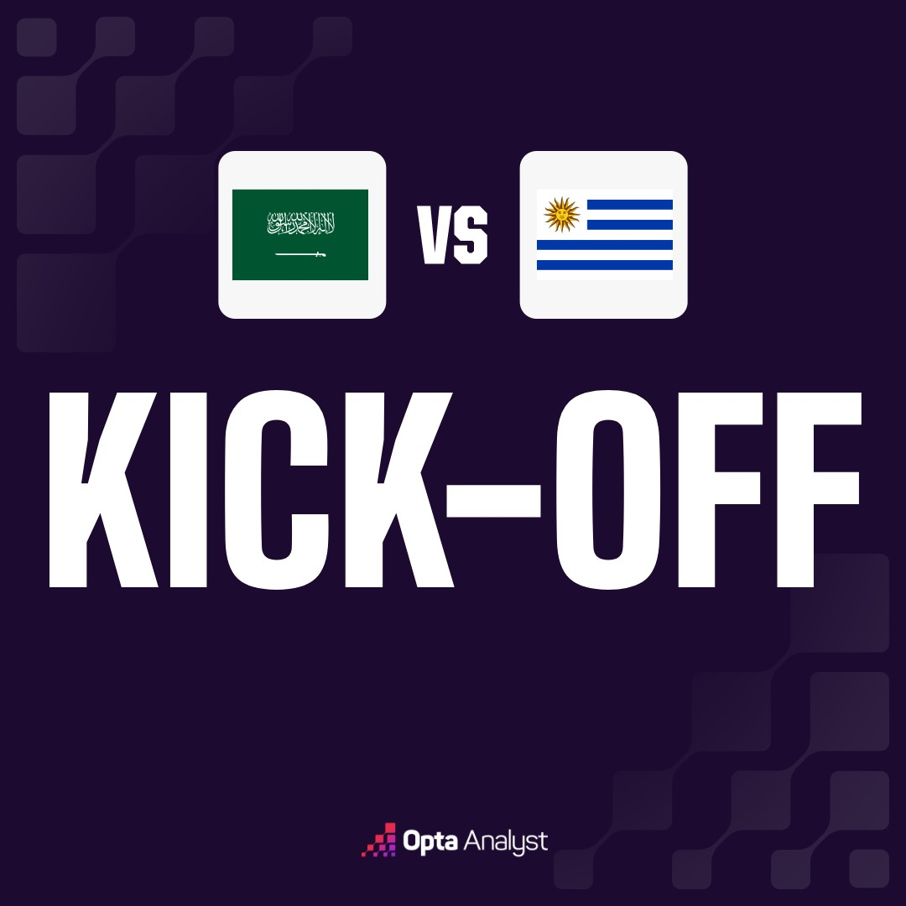
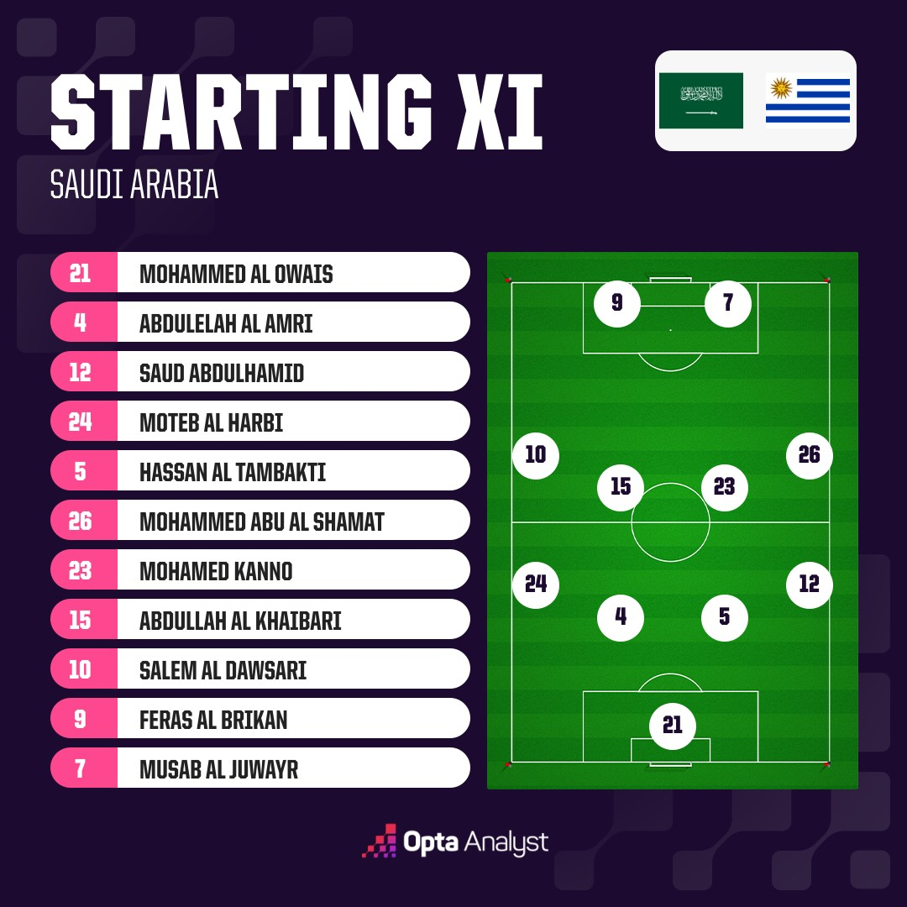
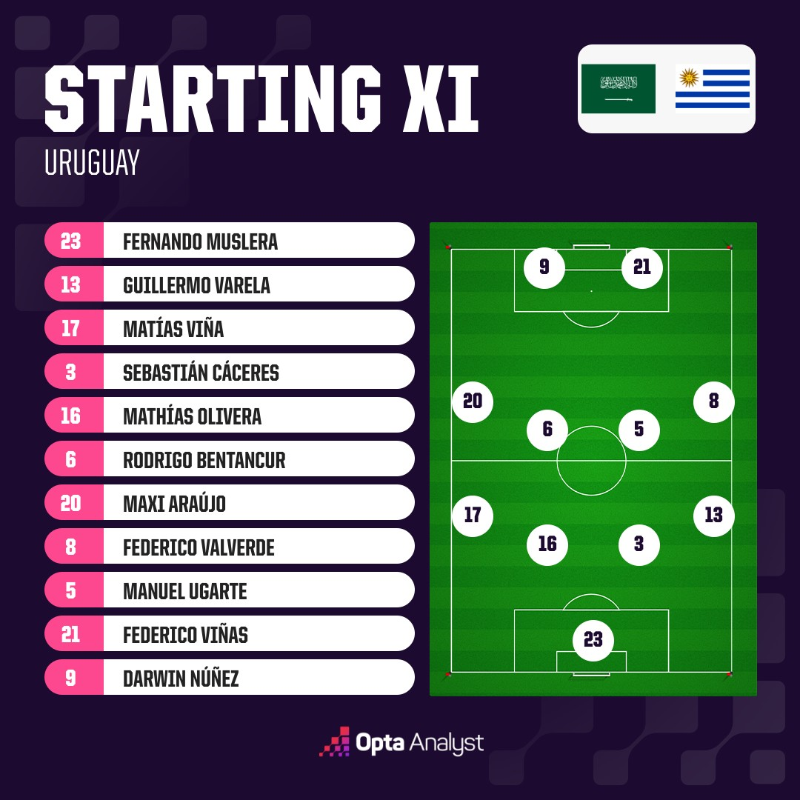
Fernando Muslera is making his 17th appearance in the FIFA World Cup.
Uruguay have kept a clean sheet in the last 3 matches
There have been fewer than 3 goals scored in total in each of Saudi Arabia's last 4 games
There have been fewer than 3 goals scored in total in each of Uruguay's last 6 away games
Uruguay will be eager to halt a run of four straight winless matches as they take on Saudi Arabia in the FIFA World Cup group stage at Miami Stadium on Monday.
Both sides are playing their first match of the competition. Saudi Arabia played out a 0-0 draw in their last match, a June 9 friendly against Senegal at Toyota Field. In five games this year, they have one win, one draw, and three losses.
Uruguay played out a 0-0 draw against Algeria in their last game, a March 31 friendly at Allianz Stadium, stretching their winless streak to four games in all competitions.
The previous fixture between the sides saw Uruguay triumph 1-0 in a 2018 World Cup match at Rostov Arena in June 2018. Luis Suárez scored for the Uruguayan side in the 23rd minute.
Abdullah Al Hamddan and Sultan Mandash have made a difference in front of goal for Saudi Arabia in 2026. They are the team's joint top scorers with two goals apiece. Federico Valverde has been the only scorer for Uruguay this year, scoring once.
In their last six matches in all competitions, Saudi Arabia have won one, drawn one and lost four. The Saudi side scored five and conceded nine over that stretch, scoring first in two of the six contests. They had two first-half goals, while their opponents netted four times in the first 45 minutes. The Uruguayan side have won two, drawn three and lost one in their last six. The Uruguayan side scored five and conceded seven in that period, netting first in two of the six. They had only one goal in the first half, while their opponents netted four times before the break.
-
General
Possession 33.2% 33.23266.76866.8% Possession lost in defensive half 45 451919 Possession lost in middle third 42 425151 Duels 83 838282 Duels success rate 48.2% 48.19351.2251.2% Aerial duels 42 424242 Aerial duels won 52.4% 52.38147.61947.6% Successful dribbles 3 388 Fouls won 6 61111 Offsides 0 066 Corner awarded 4 41414 -
Distribution
Passes 322 322612612 Long passes 41 414141 Long passes proportion (%) 12.7% 12.7336.6996.7% Passing accuracy 73.3% 73.29288.23588.2% Passes in opponents' half 159 159382382 Passing accuracy in opponents' half (%) 59.1% 59.11986.64986.6% Total passes in the final third 74 74204204 Passing accuracy in final third (%) 52.7% 52.70382.84382.8% Forward passes 207 207361361 Forward passes (%) 64.3% 64.28658.98759.0% Through balls 3 300 Final third entries 29 296565 Penalty area entries 15 154747 Total open play crosses 3 33434 Crosses 6 64747 Crossing accuracy 50.0% 5034.04334.0% -
Attack
Goals 1 111 Shots 7 72727 Shots on target 3 31010 Blocked shots 1 177 Headed shots 1 11010 Shots outside the box 3 31111 Shots inside the box 4 41616 Shots accuracy excluding blocked shots 50.0% 505050.0% Shooting accuracy 42.9% 42.85737.03737.0% Key Passes 1 11919 -
Defence
Tackles 11 1133 Tackles success rate 72.7% 72.72766.66766.7% Clearances 43 431717 Interceptions 9 91010 Recoveries 39 395252 Attacking third recovery 5 566 Defensive third recovery 19 192121 Midfield third recovery 15 152525 Recoveries in attacking half (%) 12.8% 12.82111.53811.5% -
Discipline
Fouls conceded 11 1166 Yellow cards 1 100 Red cards 0 000